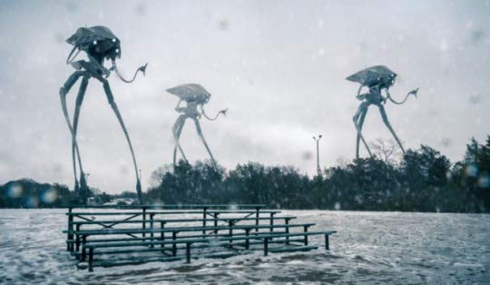

‘But who shall dwell in these worlds if they be inhabited?
. . . Are we or they Lords of the World? . . . And
how are all things made for man?’
KEPLER (quoted in The Anatomy of Melancholy)
The War of the Worlds

by H. G. Wells
I. THE EVE OF THE WAR.
No one would have believed in the last years of the nineteenth century
that this world was being watched keenly and closely by intelligences
greater than man’s and yet as mortal as his own; that as men busied
themselves about their various concerns they were scrutinised and
studied, perhaps almost as narrowly as a man with a microscope might
scrutinise the transient creatures that swarm and multiply in a drop of
water. With infinite complacency men went to and fro over this globe
about their little affairs, serene in their assurance of their empire
over matter. It is possible that the infusoria under the microscope do
the same. No one gave a thought to the older worlds of space as sources
of human danger, or thought of them only to dismiss the idea of life
upon them as impossible or improbable. It is curious to recall some of
the mental habits of those departed days. At most terrestrial men
fancied there might be other men upon Mars, perhaps inferior to
themselves and ready to welcome a missionary enterprise. Yet across the
gulf of space, minds that are to our minds as ours are to those of the
beasts that perish, intellects vast and cool and unsympathetic,
regarded this earth with envious eyes, and slowly and surely drew their
plans against us. And early in the twentieth century came the great
disillusionment.
The planet Mars, I scarcely need remind the reader, revolves about the
sun at a mean distance of 140,000,000 miles, and the light and heat it
receives from the sun is barely half of that received by this world. It
must be, if the nebular hypothesis has any truth, older than our world;
and long before this earth ceased to be molten, life upon its surface
must have begun its course. The fact that it is scarcely one seventh of
the volume of the earth must have accelerated its cooling to the
temperature at which life could begin. It has air and water and all
that is necessary for the support of animated existence.